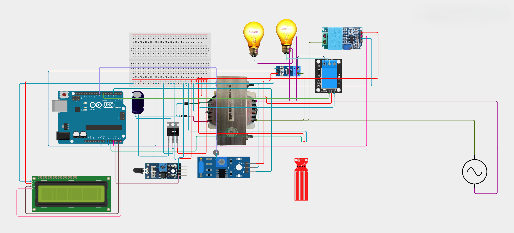
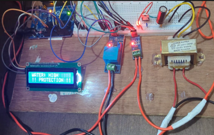

POWER SYSTEM PROTECTION / INDUSTRIAL AUTOMATION
Single-Phase Induction Motor Fault Detection & Protection System
An Arduino-based multi-sensor fault detection and protection prototype designed to monitor electrical and environmental conditions and automatically disconnect the connected load when a fault occurs.
01 / OVERVIEW
Project Overview
This project demonstrates an Arduino-based protection system for a single-phase induction motor or connected electrical load.
The system monitors current, voltage, vibration, flame and water conditions through dedicated sensors. If any measured parameter crosses its programmed threshold, the Arduino trips a relay to disconnect the load and activates audible and visual alerts.
The prototype demonstrates threshold-based protection. It does not perform advanced motor-fault diagnosis or replace industrial-rated protective equipment.
02 / PROJECT MEDIA
Circuit & Hardware


03 / OBJECTIVES
Project Objectives
- Continuously monitor voltage and current.
- Detect abnormal vibration conditions.
- Identify flame and water-related hazards.
- Disconnect the load automatically during faults.
- Display fault information on a 16×2 LCD.
- Activate an audible buzzer warning.
04 / COMPONENTS
Main Components
Arduino Uno
Main controller for monitoring and fault detection.
ACS712 Current Sensor
Measures current drawn by the connected load.
ZMPT101B Voltage Sensor
Monitors AC supply voltage.
SW-420 Vibration Sensor
Detects abnormal vibration conditions.
Flame Sensor
Detects flame-related conditions.
Water Sensor
Detects unsafe water or moisture conditions.
Relay & Buzzer
Automatic isolation and audible fault warning.
16×2 LCD
Displays measurements and fault status.
05 / FAULT DETECTION
Protection Thresholds
Overcurrent
Current greater than 1 A.
Overvoltage
Voltage greater than 300 V.
Water Fault
Sensor reading greater than 600.
Flame Alert
Sensor reading below 700.
Vibration Fault
SW-420 output HIGH.
06 / WORKING PRINCIPLE
Automatic Fault Protection
The Arduino continuously receives measurements from the current, voltage, vibration, flame and water sensors.
During normal operation, the relay remains ON. When any parameter exceeds its programmed limit, the controller identifies the corresponding fault and switches the relay OFF.
The connected load is disconnected, the buzzer activates, and the LCD displays the detected fault and system status.
07 / TESTING
Experimental Validation
The project report documents 10 test conditions, including normal operation, individual faults and multiple simultaneous faults.
Normal Operation
220 V, 0.60 A: no fault detected; relay ON and buzzer OFF.
Overcurrent
1.20 A: overcurrent detected; relay OFF and buzzer ON.
Overvoltage
305 V: overvoltage detected; relay OFF and buzzer ON.
Environmental Faults
Water, flame and vibration fault conditions triggered relay isolation and buzzer alerts.
08 / LIMITATIONS
Limitations & Challenges
- The system uses fixed thresholds rather than advanced fault classification.
- Measurement accuracy depends on sensor calibration.
- The prototype does not monitor motor speed or temperature.
- Remote monitoring is not implemented.
- Industrial applications would require properly rated protection equipment and validation.
09 / FUTURE IMPROVEMENTS
Future Development
- Add motor temperature monitoring.
- Implement under-voltage protection.
- Integrate RPM measurement.
- Add IoT-based monitoring and fault notifications.
- Use an industrial-grade contactor and protection circuit.
10 / TECHNICAL LEARNING
Engineering Learning
The project provided experience with sensor interfacing, real-time monitoring, threshold-based protection logic, relay control, Arduino programming, fault indication and electrical system testing.
11 / DOCUMENTATION
Project Report
The full report includes the circuit diagram, hardware specifications, protection thresholds, working principle, test dataset and limitations.
View Full Project Report ↗